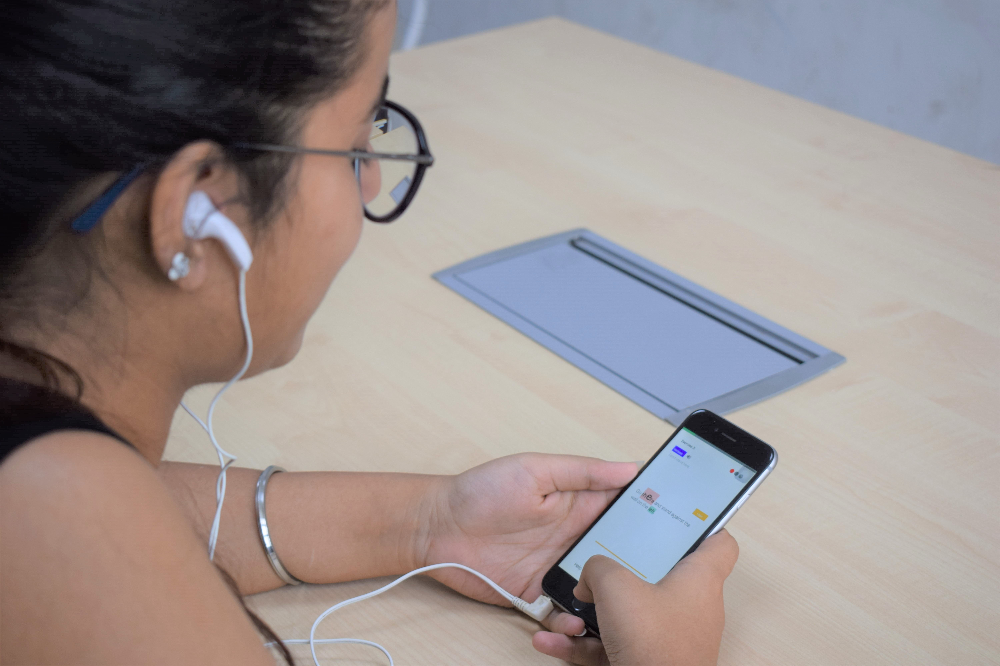
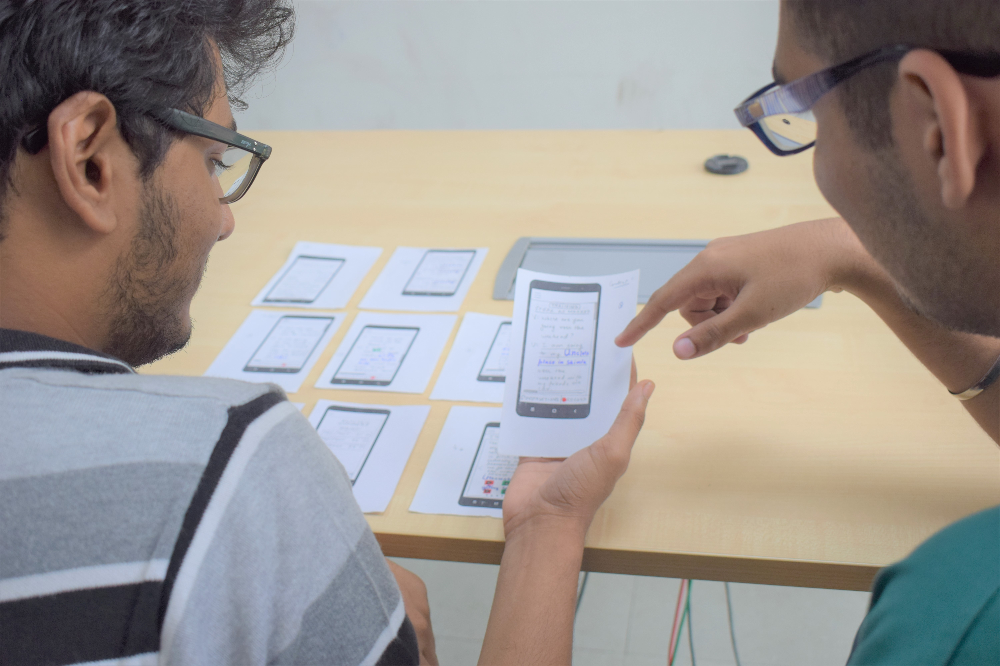
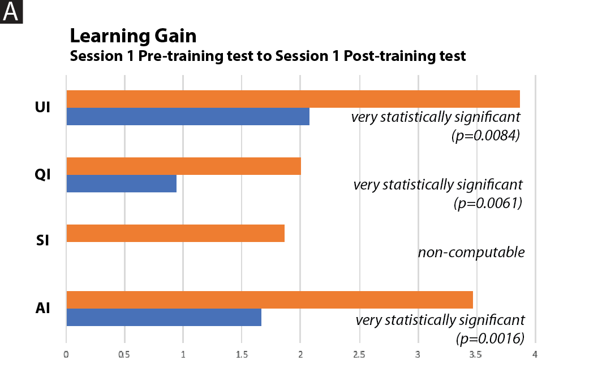
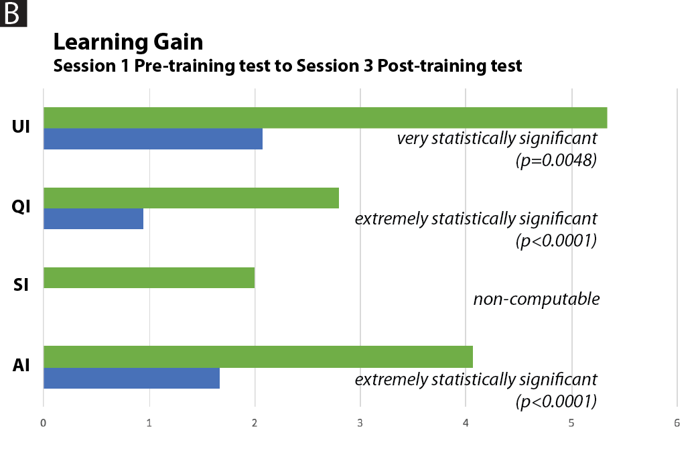

Verbose
Speech Improvement App for Non-Native English Speakers
Iterative Design Process

Summary
ESL (English as a second language) speakers tend to follow the tone structure of their frst language, making their speech difcult to understand for native speakers, thereby limiting their opportunities for education and employment. To address this problem, we build an interactive smartphone-based educational mobile application using the user-centered design process. This application teaches English intonations based on globally consistent pitch patterns through conversations with a trained chat assistant, which inculcates expert linguists’ teaching principles. After co-designing the application’s parameters with primary stakeholders and expert visual designers, we assess its efectiveness by measuring the pre and post-performance of the users after the system usage, using various quantitative measures, like intonation scores, SEQ, and SUS. Feedback from users suggests that ESL speakers fnd signifcant improvement in the perception of their vocal expressions, thereby highlighting the necessity of such a system in improving the quality of conversations that people have in general.
My responsibilities
- I was the team lead for the project.
- I realized the need for an educational tool in the lives of people who have English as second language.
- I read the related work and found a gap in existing literature that we can leverage to make an educational tool that is novel and effective, i.e. a tool that teaches why, how and when to speak something.
- I was responsible for designing the protocol, procedure and recruitment critertia for all the user studies, including the visual representation study, low-fidelity study and final application testing study after consultation with fellow team members and Dr. Parnami, the project advisor.
- I, along with the team members, was responsible for analyzing the interview recordings and coming up with convergent themes.
I worked on this project with Kyzyl Monteiro (undergraduate researcher at Weave Lab) and Jaivrat Saroha (intern at Weave Lab). Kyzyl was responsible for providing hands-on coding and designing various image proposals. Jaivrat was responsible for providing assistive literature review on the work. Dr. Angus Forbes and Dr. Aman Parnami were the advisor for the work.
Problem
 The style of English speaking in populations where the native language is not English, is a problem. People in these areas tend to speak English in the same style as their native language. For example, Hindi is a syllable-timed language and Hindi speaking people who have English as their second language (ESL), tend to speak English in a syllable-timed manner. English, however is supposed to be spoken in a stress-timed manner. A user study on the proof of concept revealed the importance such a tool can have on the lives of ESL speakers in terms of making them better public speakers and improving their communication skills.
The style of English speaking in populations where the native language is not English, is a problem. People in these areas tend to speak English in the same style as their native language. For example, Hindi is a syllable-timed language and Hindi speaking people who have English as their second language (ESL), tend to speak English in a syllable-timed manner. English, however is supposed to be spoken in a stress-timed manner. A user study on the proof of concept revealed the importance such a tool can have on the lives of ESL speakers in terms of making them better public speakers and improving their communication skills.
Solution - Intonations
A thorough literature survey revealed 4 intonations which are universally accepted across all types of English accents like Australian, British, American etc. and that have different contextual meanings. Each intonation had a different type of shape in terms of its pronunciation and different place in the sentence where it is pronounced. These intonations were modelled for practice in the final samrtphone app to teach why, when and how to pronounce intonations.
Proof of Concept Test - Cue Card Study

The cue card study was done with 10 participants, all selected from the university campus through emails. The app was designed to engage the user in a conversation with a chat agent called Verbose (simulated by the designer in the cue card study). The participant and the designer had to role play the conversations alternatively. Each participant was supposed to speak the same sentence three times, but each time with different contexts. Each participant went through the entire procedure after consenting to the study. The change in performance was calculated before and after the cue card training to validate the teaching pedagogy. Along with this, the recordings of individual participants were recorded and later checked on the Praat software for observations that could be transferred to the final smartphone app.
Design Process
Design Requirements From Cue Card Study
| Rx | Design | Description |
|---|---|---|
| R1 | Conversation-based pedagogy | A trained member of the research team who can intonate properly speaks as the chat agent |
| R2 | Context-based pitch modulation | Precursor sentences before a target sentence defne context in a conversation between the participant and chat agent |
User Testing Stages
Following the proof of concept cue-card study, the app was developed through the following three user testing stages.
- A low-fidelity study was used for coming with the basic app structure, embedding necessary interactions that aide the learning process and finally, governing the app flow.
- An audio-visual user study revealed the most intuitive way to represent stress in written English. This was also one of our key contributions in the study.
- A mobile-based app testing confirmed the hypothesis regarding the teaching methodology, practical applications of the skills taught, usability of the app and novel insights revealed from the subjects.
Low-fidelity Prototype Testing

A think-aloud approach informed the basic app structure, with useful interactions in the learning process, relevant information to be displayed and the complete app flow. 10 participants were selected from the university by sending out emails about the testing of a voice-based learning app. Open coding the think aloud sessions of the participants on sketch-based mockups of the app usage gave us five categorical emergent themes. First was clear demarcation of the different app phases. This prompted us to include section wise distinctions of the various app phases, namely, instructions, pre training, training, post training and analysis phases, which were clearly mentioned through a splash screen in the app. Second was graphical representation of the analysis phase for a less cluttered and less cognitively-loaded mode of display, which initially was only textual. This was incorporated in the final app development through two types of graphs showing the progress made in terms of the individual intonations learned and the total change in performance score as compared from the pre-training phase.
 (1).jpg) Third was section wise feedbacks on the training screens within the training phase for reinforcing the learning process that improves intonations. This was included in the final smartphone app development through constant pop-up feedback interactions and feedback screens after each training screen. Fourth was cues on the interaction details in the training screens, with ways to display the minimum number of tries, bonus attempts and hints. The minimum number of tries and bonus attempts were incorporated in the final app through circular icons on the top right of each training screen with three different colors, red denoting the wrong attempt, green denoting the correct attempt and grey denoting the remaining attempts. Hints were denoted through a separate button on the bottom left of the screen denoting incremental hints with each try to successfully complete the training level trial. The final theme that emerged out of the user study was introducing each new intonation before the actual training session. This was incorporated through a splash screen at the beginning of each new introduced intonation. The low-fidelity study gave us five important feedbacks and helped us transfer the relevant design details to the final mobile-based app.
Third was section wise feedbacks on the training screens within the training phase for reinforcing the learning process that improves intonations. This was included in the final smartphone app development through constant pop-up feedback interactions and feedback screens after each training screen. Fourth was cues on the interaction details in the training screens, with ways to display the minimum number of tries, bonus attempts and hints. The minimum number of tries and bonus attempts were incorporated in the final app through circular icons on the top right of each training screen with three different colors, red denoting the wrong attempt, green denoting the correct attempt and grey denoting the remaining attempts. Hints were denoted through a separate button on the bottom left of the screen denoting incremental hints with each try to successfully complete the training level trial. The final theme that emerged out of the user study was introducing each new intonation before the actual training session. This was incorporated through a splash screen at the beginning of each new introduced intonation. The low-fidelity study gave us five important feedbacks and helped us transfer the relevant design details to the final mobile-based app.
Design Requirements From Low Fidelity Study
| Rx | Design | Description |
|---|---|---|
| R3 | Introductory/concluding screens | Introductory screen presents conceptual facts on intonations and concluding screen rationalizes why to use a particular intonation (7/10) |
| R4 | Gradual increase in difculty | Gradual increase in number of intonations and difficulty of a training sentence enable ease of learning (10/10) |
| R5 | Gamify the learning process | Red and green visual circles provide instant feedback. (n+1) minimum attempts followed by a hint provide optimal challenge (5/10) |
| R6 | Personalized training metrics | Participant’s own result achieved in a previous session provides benchmark for future performances (6/10) |
| R7 | Holistic analysis | An intonation-wise, sentence-wise and overall overview of the entire session provide a holistic analysis (5/10) |
Visual representation study
Although a universal agreement has been reached to represent all possible human speech sounds through International Phonetic Alphabet (IPA) [11], little consensus been has developed for the representation of stress or pitch modulation. The figure represents the various ways in which pitch has been represented textually historically. A) depicts the notation presented by James Rush, B) presents the notation given by Lieberman tracing the 10th harmonic of a spoken sentence, C) depicts notation presented by Crystal, D) presents the notation presented by Bolinger, and E) portrays the notation presented by Ladefoged.
We used the following parameters to design our visual representations to be tested -
| Px | Parameter |
|---|---|
| P1 | We used an orthographic system of language representation and nota phonetic representation with the assumption that the users are more aware and responsive to such a representation. |
| P2 | The representation system highlighted the tonic unit as well as the tonic syllable of the required intonation. The tonic unit in a sentence determines the phrase where stress is to be used, while the tonic syllable within that unit determines the exact syllable that is required to be stressed, thereby indicating the type of intonation. |
| P3 | We considered using all the available highlighting options, namely text color, bold, italics, underline and background color which are available within any standard text editor like Google Docs, along with gradient text color, to highlight the pitch target part. |
| P4 | We further considered using either relative change in text size and graphical representation superimposed on the orthographic representation, to show a relative change in pitch among the syllables of a word. This design criterion is assumed to help a user know the exact place of pitch modulation. |
Design Requirements from Visual Representation Study
We developed 12 visual representations (as shown in the figure below) from the combination of the above parameters to represent the stress or emphasis in a sentence for a user to intonate. The 12 visual representations were given in a randomized order to 10 students of visual design along with their respective audio clips. They were then asked to rate the closeness of the audio recordings to each of the representations (on a scale of 1 to 10) and point out the mismatch between the two if any.
The average rating for both bold/variation in text size and text color (gradient)/variation in text size both came out to be 8.16/10, which meant that they were the most intuitive representations for highlighting the tonic unit and tonic syllable within a sentence. 3 design students found highlighting the tonic syllable with any color (blue in our case as used by us) other than black to be confusing. They felt that blue being a lighter color than black can also imply more stress on the black text part (text that is supposed to have no intonation). Therefore, we only used black as our text color consistently. We validated the above mentioned two changes to our representations obtained from the additional comments provided by the design students by consulting with the design expert.
| Rx | Design | Description |
|---|---|---|
| R8 | Visual representation of pitch | Bold highlights the words of intonation and variation in text size indicates the place and type of intonation |
App Architecture
The figure above describes the system upon which the final high-fidelity app was built. The technical implementation of our system contained four phases - voice input phase, pitch extraction phase, intonation analysis phase, and visual feedback phase. Voice input from the user was recorded for analysis and pitch extracted using Parselmouth. It was then sent to the server for content analysis. If a normal threshold accuracy for correctness was achieved, the audio was split into timeframes to get the exact part where the user intonated in a sentence. This was then analysed through a self constructed algorithm for checking intonation. Finally, the feedback was presented to the user through the mobile device.
Mobile App Structure


Final Mobile Application Testing

A comprehensive evaluation on the final high-fidelity app across three sessions and in between the 4 phases of the app, namele, pre-training test, training, post-training test and analysis phases, was done using methods as shown below.
UEQ (User Experience Questionnaire)
A UEQ questionnaire was conducted to find out the user reponses on features of the app involving attractiveness, perspicuity, efficiency, dependability, stimulation and novelty.
SUS (System Usability Scale)
The SUS scores were used to find the app usability. Any score above 80.3 (out of 100) on the SUS scale is among the top 10 percentile and correlates to the adjective rating of good. The overall user-friendliness of our app was rated 82.3 (out of 100) on SUS. The score was much above the required average benchmark score on SUS, which is 68. These results proved the hypothesis of our app in teaching the requisite English speaking skills. Quantitative analysis of learning gain across different intonation and across sessions revealed each result was statistically significant. Further, the percentage incorrect performance of the users was used to find the level of difficulty of each intonation. To further validate our findings and ground them in reason, these numbers were assisted from our qualitative findings of semi structured interviews conducted after session3 of the study.
Qualitative Observations
Qualitative observations revealed that all people found the skills taught to be useful in improving speech expressions. We conducted two-open ended semi-structured interviews with each participant. We first inductively coded the themes and then, deductively coded all the interviews again, marking converging themes.
Novelty of the system
''I was unaware and didn’t think specifcally about stress (intonations) till now. I always thought more on clarity or time spent on a topic, rather than the stress in the pitch.''
''I guess the continuation intonation (in the application) told (informed) me to emphasize each and every word while I was fnishing a thought. I would really like to implement that.''
Effectiveness of teaching pedagogy
''I guess it (the mobile application) provides hints towards the modulation of how you speak. If someone is talking really fast, or if someone doesn’t know what he or she is speaking, just by the modulation you can tell if that sentence is a question or a statement.''
''I found the experience to be a very pleasant one. I never felt at any moment that I was getting bored. In fact, I rather enjoyed conversing with the chat agent, mainly because the way he spoke sounded very nice. I could almost feel like a personalized trainer is taking me through the app and conversing with me, alongside teaching the necessary skills.''
Gamification
''The design of the training exercises was very effective in my opinion. The screens were very interactive, it almost became like a challenge not to enter in the Bonus section and get the intonation right in the given number of tries.''
Visual Representation
''...(the context) was easy to understand because of the changed characters (in the visual representation)''
Conceptual Facts on Intonations
''The introductory screen was very important as it introduced me with new conceptual knowledge, which made things relatively easy to understand when I had to perform in the exercises. Also, the feedback screen gave explanations that why depending on a particular question (context) asked by Verbose, the intonation of an answer for specifc words will change.''
''I also think that presenting a feedback of each exercise was also very helpful in concretizing and remembering these concepts.''
Gradual Increase in Difficulty
''When the session fnishes, it seems like you have learned a lot. It is a lot of new things, but I think the content has been designed intelligently. I didn’t feel anytime that I have to learn a lot suddenly. It was a gradual process.''
Utility of the Mobile Application
''You can’t understand the formation of sentences in their (ESL speakers) speech, so you are in general confused (about context) what they are trying to stress on. At those moments you understand that it (context specifc stress words) matters...like some people intonate words like "the" and "it" , and it just makes the sentence confusing to interpret.''
''It’s important because you want to convey the intention very clearly...my speech has improved. I am not a bland speaker anymore (laughs).''
Use Cases
''For UPSC (Civil Services examination) aspirants, it is necessary to clear the interview...So these people who are preparing, they use many methods (to improve English) and this defnitely could be one of them''
Quantitative Observations
To fnd if the scores were signifcant, we performed a two-way repeated measures ANOVA test for the two factors of session (levels - 1 and 3) and intonation (levels - accent , sentence, question and continuation). The data followed normal distributions as tested through a Shapiro-Wilk and Kolmogorov-Smirnov test. However, our data violated sphericity for the factors - intonation and (intonation * session), as observed through the Mauchly’s test of sphericity. Hence, we used Greenhouse Geisser corrections for reporting the fnal test values for these 2 factors.

Two-Way Repeated Measures ANOVA
| Factor | F value | Details |
|---|---|---|
| Session | F (1, 15) = 13.182 | p = 0.003, pes = 0.485 |
| Intonation | F (1.329, 18.606) = 15.750 | p < 0.001, pes = 0.529, (E = 0.443) |
| Intonation * session | F (1.418, 19.852) = 3.969 | p = 0.048, pes = 0.221, (E = 0.473) |